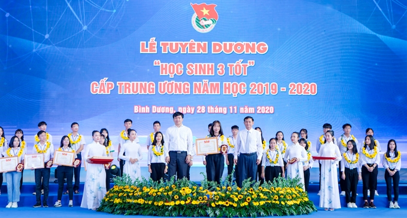
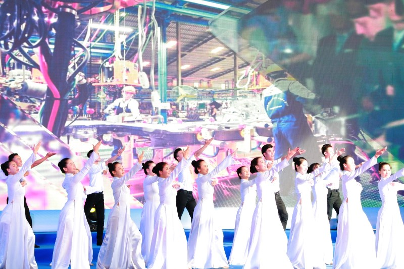
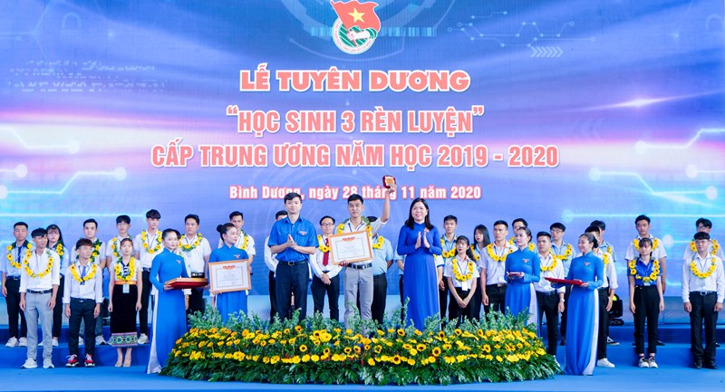

By Group5| Nov 20, 2021 | Article
Activities of Associations and Teams Web.DTN: In the morning of November 28, at Dai Nam Tourist Area, Binh Duong province, the Central Youth Union held a ceremony to commend "Students 3 good" and "Students 3 practice" in the year. academic year 2019 - 2020. 139 "Students of 3 good" and 37 "Students of 3 practice" were commended.
The title of "3 Good Student" awarded by the Secretariat of the Central Committee of the Ho Chi Minh Communist Youth Union to students of high schools, Centers of Vocational Education and Continuing Education across the country. Students who have won the title of "Three Good Students" at the central level are students with outstanding achievements in learning and training, typical youth, excellent union members, actively participating in union activities, volunteer activities, have good physical strength; won the title of "3 Good Student" at the provincial level and was selected by the Central Council.
Students won the title of "Students of 3 training" at the central level, which is a title awarded by the school year to students participating in intermediate-level training programs in vocational education institutions. The student has won the title of "Students of 3 for training" at the provincial level and selected by the Selection Council for the title of "Students of 3 for training" at the central level.
Students who have won the title "Students of 3 training" at the central level are typical people who have met the selection criteria on ethics, skills and physical strength, have excellent academic results, participated in and achieved good results. prizes in scientific and technical creative contests and competitions and skill competitions at all levels. At the same time, these are also typical students, actively participating in activities, content of Union work, youth movement and volunteer activities in the school.
The academic year 2019-2020, there were 352 applications for awarding the title of "3 Good Student" at the central level introduced and selected by the Provinces and Youth Unions. The students are introduced as typical role models, have been commended at the provincial level. However, with the conditions according to the regulations of the title at the central level, 139 students were selected for commendation by the Council.
At the same time, from 54 applications for awarding the title of "Students of 3 training" at the central level introduced and selected by the Provinces and Unions, the Central Title Selection Council selected 37 shortlisted students. "Students of 3 training" at the central level for the academic year 2019-2020. The school year 2019 - 2020 is the second year the movement "Student 3 good" has been widely deployed among high school students, vocational education and continuing education centers, and is the fourth year of the movement "Students with good grades".
“Training students” is interested and implemented byvocational education institutions of the intermediate system. In addition to striving for titles at the central level, the provinces, unions and delegations of schools have actively developed the criteria "Students of 3 practice", "Students of 3 are good" in accordance with the situation, practices of localities and units, taking that as goals, orienting students to participate in the movement and creating an environment for students to practice and strive for titles".
On behalf of the Secretariat of the Central Committee of the Union, he wished that "the title of "Good Student of 3", "Students of 3 of Training" would be a beautiful memory in the baggage of the years when he was still in school. will be the initial encouragement for you to continue to strive, practice, achieve greater success, truly become pioneers in the movement of learning and training at the school and in the class. ; become elite citizens, skilled workers, solid skills, strong bravery, contributing to the construction and development of the country to become richer, more beautiful and civilized.
At the program, the delegates watched a report on the process of implementing the movement "Students 3 good", "Students 3 practice" nationwide. In particular, the delegates had the opportunity to interact with typical examples of the movement, thereby, to better understand the process of striving for training to achieve the title of "Students of 3 Practice", "Students of 3 Good" of your fellow students. At the same time, interacting with Mr. Nguyen Van Phong - Deputy Director of the Department of Education and RED